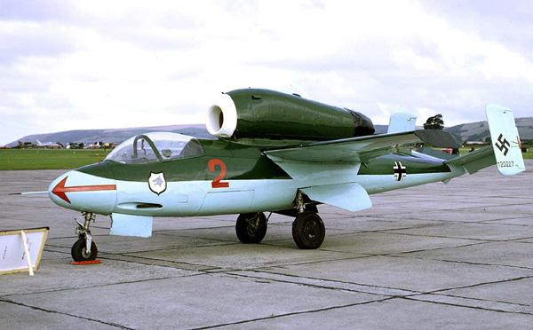

Heinkel He 162

-
-
Role : Jet fighter
Manufacturer : Heinkel
Designer : Heinkel
First flight : 6 December 1944
Introduction : January 1945
Retired : May 1945
Status : Retired
Primary User : Luftwaffe
Number built : ca 320
- Operators
Nazi Germany
- - Luftwaffe
France
- - French Air Force (Test aircraft)
United Kingdom
- - Royal Aircraft Establishment
- Engine
- - For the single-engine development, the removed the lower engine and repositioned the remaining upper engine just aft of the cockpit and centered directly over the wing's center section.This made the overal ballance of the aircraft simple and placed the engine in a convenient point for removal as it could be removed upward with a small crane.
-
- This also meant the jet exhaust was over the fuselage and across the tail area.
For this reason, the tail was constructed with two small vertical stabilizers positioned to either
side of the exhaust path, and the horizontal elevator mounted below it. The horizontal section
had considerable dihedral at 14º, raising the vertical stabilizers inline with the wing.
- Performance
- - Maximum speed: 790 km/h (490 mph, 430 kn) at sea level (normal thrust)
- 840 km/h (520 mph; 450 kn) at 6,000 m (20,000 ft) (normal thrust)
- 890 km/h (550 mph; 480 kn) at sea level (emergency boosted thrust)
- 905 km/h (562 mph; 489 kn) at 6,000 m (20,000 ft) (emergency boosted thrust)
- Range: 975 km (606 mi, 526 nmi)
- Service ceiling: 12,000 m (39,000 ft)
- Rate of climb: 23.42 m/s (4,610 ft/min)
- Wing loading: 252 kg/m2 (52 lb/sq ft)
- Thrust/weight: 0.35 (normal thrust)
- 0.41 (emergency boosted thrust)
- Armament
- - Guns: 2 × 20 mm (0.787 in) MG 151/20 autocannon with 120 rpg (He 162 A-2) OR 2 × 30 mm (1.181 in) MK 108 cannon with 50 rpg (He 162 A-0, A-1).